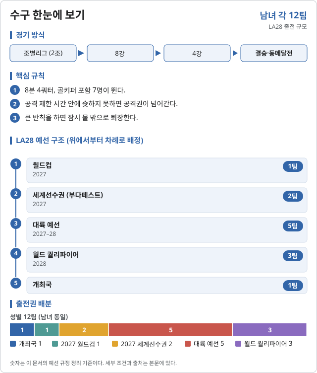
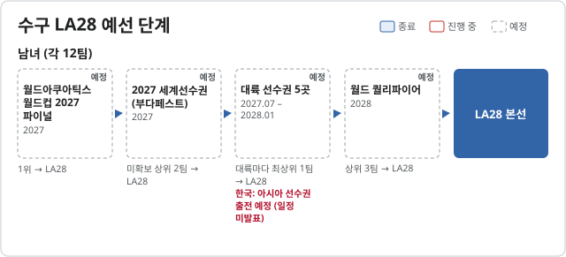

수구 (Water polo)

LA28 출전 확정 2026-11-06 기준
| 국가 | 경로 | 비고 |
|---|---|---|
| 개최국 | 남녀 각 1팀 |
LA28 예선 단계 2026.10.31 기준


| 단계 | 시기 | 상태 | 다음 단계 | 결과·진출 | 한국 |
|---|---|---|---|---|---|
| 월드아쿠아틱스 월드컵 2027 파이널 | 2027 | 예정 | 1위 → LA28 | ||
| 2027 세계선수권 (부다페스트) | 2027 | 예정 | 미확보 상위 2팀 → LA28 | ||
| 대륙 선수권 5곳 | 2027.07 – 2028.01 | 예정 | 대륙마다 최상위 1팀 → LA28 | 아시아 선수권 출전 예정 (일정 미발표) | |
| 월드 퀄리파이어 | 2028 | 예정 | 상위 3팀 → LA28 |
개최국 미국을 더해 성별 12팀이다. LA28부터 여자도 남자와 같은 12팀이다.
2026 주요 대회 결과 2026-11-06 23:13 KST
위키백과 대회 문서에서 자동으로 모은다. 대회 중에는 한 시간마다 새로 읽는다. 한국 선수가 있는 줄은 붉게 칠했다. 하계 실시간 전체 →
아이치·나고야 아시안게임 아이치·나고야 · 09.20~10.03 종료 결과 2/2종목 · 한국 금0 은0 동0
| 종목 | 금 | 은 | 동 |
|---|---|---|---|
| Medalists | |||
| 남자 | |||
| 여자 | |||
메달 순위:  일본 1-1-0 ·
일본 1-1-0 ·  중국 1-0-1 ·
중국 1-0-1 ·  카자흐스탄 0-1-0 ·
카자흐스탄 0-1-0 ·  태국 0-0-1
태국 0-0-1
출처: 위키백과 Water polo at the 2026 Asian Games · 2026-11-06 22:37 읽음
예선 규정
| 경로 | 팀 수 | 단위 |
|---|---|---|
| 남자 · 개최국 | 1 | 팀 |
| 남자 · 월드컵 2027 | 1 | 팀 |
| 남자 · 세계선수권 부다페스트 2027 | 2 | 팀 |
| 남자 · 대륙 예선 | 5 | 팀 |
| 남자 · 월드퀄리파이어 2028 | 3 | 팀 |
| 여자 · 개최국 | 1 | 팀 |
| 여자 · 월드컵 2027 | 1 | 팀 |
| 여자 · 세계선수권 부다페스트 2027 | 2 | 팀 |
| 여자 · 대륙 예선 | 5 | 팀 |
| 여자 · 월드퀄리파이어 2028 | 3 | 팀 |
예선 일정
| 대회 | 기간 | 장소 |
|---|---|---|
| 2027 월드컵 결승 (아테네) | 2027.02.24–28 | 아테네 |
| 2027 세계선수권 (부다페스트) | 2027 | 부다페스트 |
| 2028 세계 예선 | 2028 | 미정 |
직전 올림픽 메달리스트
| 세부종목 | 금 | 은 | 동 |
|---|---|---|---|
| 남자 | 세르비아 | 크로아티아 | 미국 |
| 여자 | 스페인 | 호주 | 네덜란드 |
대한민국
확보 쿼터: 미정. 예선 결과 발표 후 갱신한다.